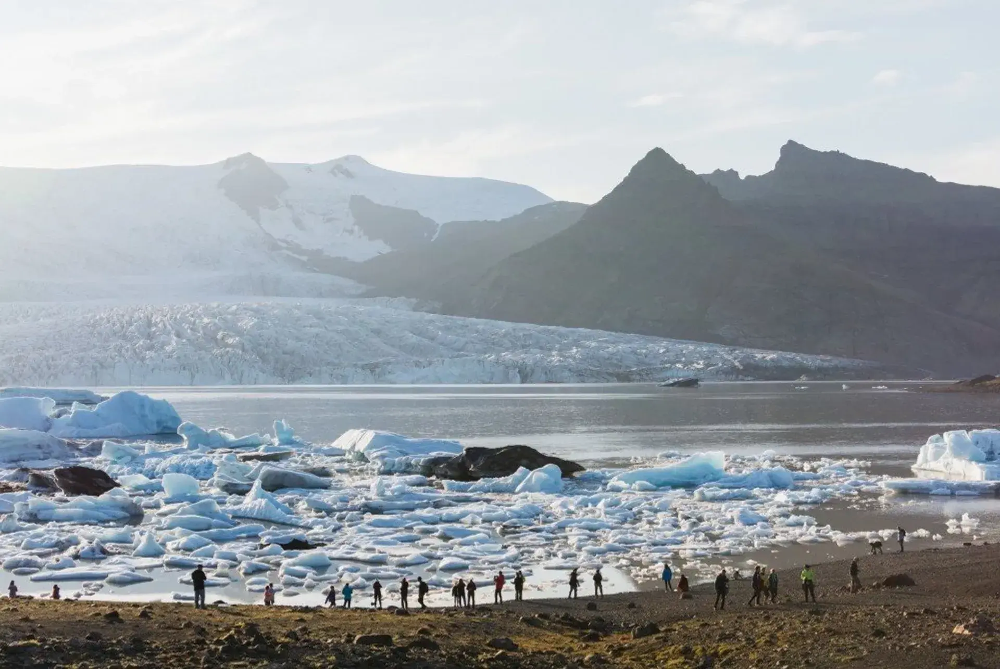
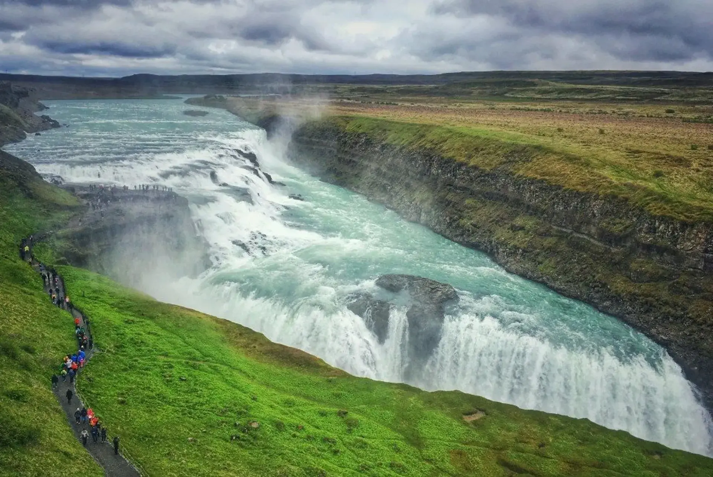
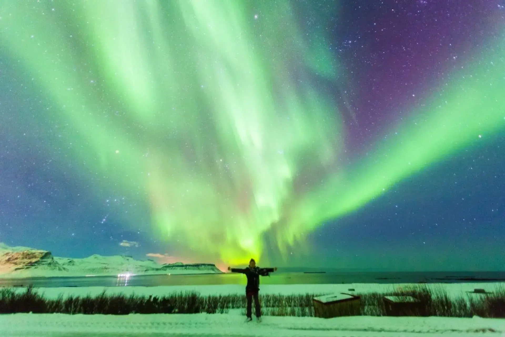

#1 ijsland
Vulkanen, warmwaterbronnen en spuitende geisers geven je een indrukwekkend beeld van de krachten en het vuur van onze aarde. Laat je ook imponeren door het ijs van IJsland, het grootste gletsjermeer Jökulsárlón, adembenemende watervallen en met een beetje geluk in de winter; het noorderlicht!
to do
De gletsjermeren zijn indrukwekkend
Stel jezelf een helderblauw meer voor waarin grote stukken ijs voorbij komen schuiven en waarbij je op de achtergrond gave gletsjers ziet liggen. Het lijkt een sprookje, maar in IJsland is het echt. Jökulsárlón is het grootste gletsjermeer van IJsland en een lust voor het oog. Niet enkel vanwege zijn natuurpracht, ook spot je hier zeehonden tussen de ijsschotsen. In de buurt ligt ook een ander gletsjermeer: Fjallsárlón. Eveneens een stop waard!
Het heeft waanzinnige watervallen
Aan vallend water is in IJsland geen gebrek. Waar je ook loopt en welke expeditie je ook maakt, overal kom je wel een waterval tegen. De een is nog imposanter dan de andere. Je kunt er vaak dichtbij komen, wat een extra dimensie geeft aan je natuurtocht. Zo is de Skogafoss een voorbeeld van een waterval waar je helemaal naar de top kunt klimmen. Van boven heb je schitterend zicht naar beneden.
Het is de perfecte uitvalsbasis voor het noorderlicht
Last but not least, is IJsland de ideale plek waar vanuit je het noorderlicht bewondert. Om het te zien, heb je het land wel in de wintermaanden te bezoeken. En ook dan is het een kwestie van geluk hebben, want dit magische natuurverschijnsel laat zich niet leiden. Áls je het dan ziet, is het waanzinnig, evenals de rest van het land!
bijzonderheden
Velkomin til Íslands (Welkom op IJsland)
De IJslandse taal wordt natuurlijk overal gesproken, maar met Engels kun je gelukkig ook op veel plaatsen terecht. Het IJslands is namelijk een moeilijke taal, maar daarover later meer. Deze taal is door de Vikingen meegebracht. Alhoewel er wel enige buitenlandse invloeden zijn te bespeuren en de klanken in de loop der eeuwen behoorlijk zijn veranderd, zijn het schriftbeeld en verbuigingssysteem als gevolg van de geïsoleerde ligging en het kleine inwonertal nauwelijks veranderd. Hierdoor kan men op IJsland nog zonder veel problemen de originele teksten van de saga’s en de Edda lezen.
De munteenheid (valuta) in IJsland is de IJslandse kroon.
Zoals in veel landen, heeft ook in IJsland de Centrale Bank (Seðlabanki Íslands) het alleenrecht om geld uit te geven. De IJslandse munten worden door de Royal Mint te Londen geslagen. IJslands geld hoef je niet voorafgaande aan je reis te bestellen bij je bank. Je kunt eenvoudig met je pinpas IJslandse Kronen uit de pinautomaat halen, direct na de douane. Rechts naast de pinautomaat kun je bij het wisselkantoor geld wisselen tegen de actuele koers.